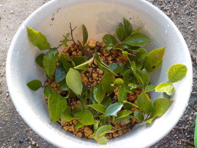
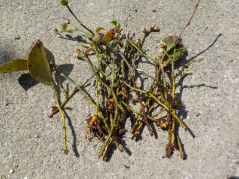
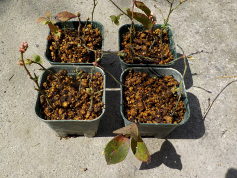

時期が遅いブルーベリーの挿し木
更新日 : 2021/09/26

落葉まで何日あるか分からないですが挿し木をしました。
1月葉が持てばなんとかなるかなーと思っています。
今まではペットボトルで密閉挿しをしていましたが、今回は底面給水鉢で挿し木をしました。
ペットボトルの発根率は高かったですが、これはどうでしょうね。
更新日 : 2021/09/26

落葉まで何日あるか分からないですが挿し木をしました。
1月葉が持てばなんとかなるかなーと思っています。
今まではペットボトルで密閉挿しをしていましたが、今回は底面給水鉢で挿し木をしました。
ペットボトルの発根率は高かったですが、これはどうでしょうね。
更新日 : 2022/04/02

挿し木してから時間が経ってるし、新芽も出てるので当然根っこが出ていると思っていたんですが、ありませんでした。
水分が多いので根っこが成長しなかったのかな。

再度挿し木をしました。
たぶんもうやらない。
時期が悪かっただけかもしれません。でももうやらないかな。